One block diagram, walked arrow by arrow, from the outside in. The film is 12:44 long and has no sound. Its narration, 1,671 words, scrolls in the corner at 150 words a minute, the word to be spoken lit, for whoever reads it aloud; the same words are the film's captions. Under it, every one of its 23 arrows as a still, with what moves along it, why, the rule at the border, and what is said.
Each card is one step of the film. The picture is the whole diagram at that moment, with the arrow lit and the small map in its corner showing where the step sits. The button plays that step in the film above.
1. The brain's loop
the brain's values→the searchtoday's values
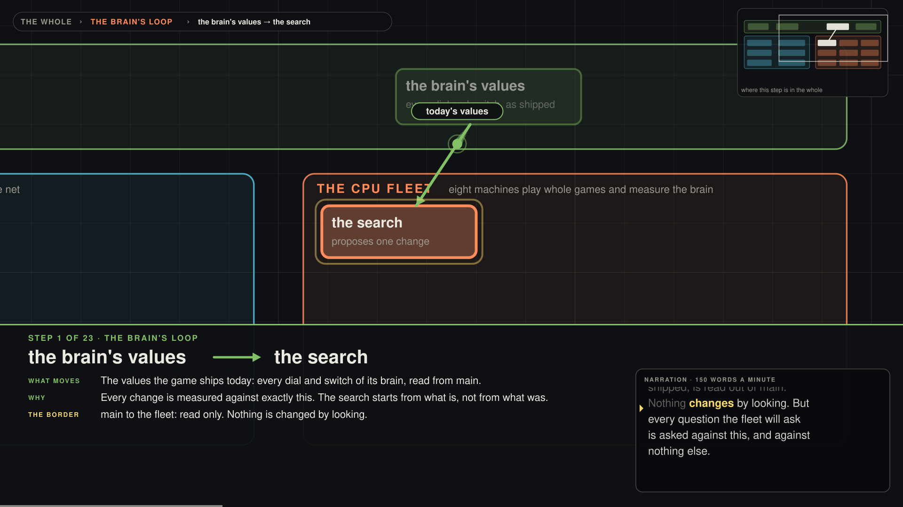
What moves
The values the game ships today: every dial and switch of its brain, read from main.
Why
Every change is measured against exactly this. The search starts from what is, not from what was.
The border
main to the fleet: read only. Nothing is changed by looking.
Narration
Start where the game is. Every dial and switch of its brain, exactly as shipped, is read out of main. Nothing changes by looking. But every question the fleet will ask is asked against this, and against nothing else.
2. The brain's loop
the search→the first reada trial
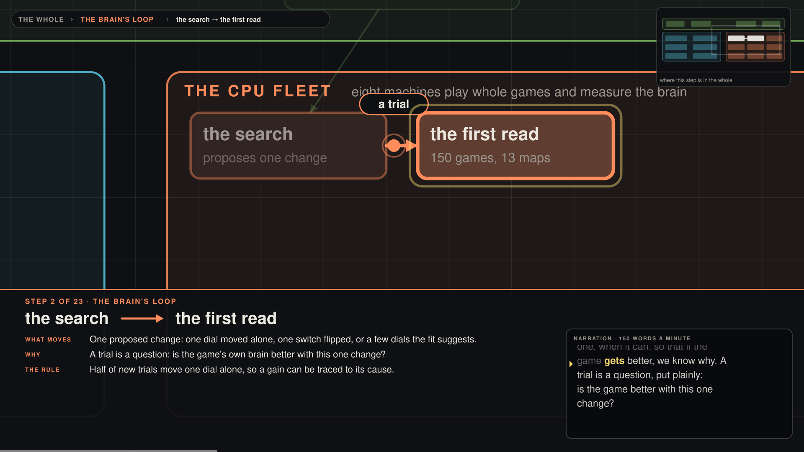
What moves
One proposed change: one dial moved alone, one switch flipped, or a few dials the fit suggests.
Why
A trial is a question: is the game's own brain better with this one change?
The rule
Half of new trials move one dial alone, so a gain can be traced to its cause.
Narration
The search makes a guess. One dial moved. One switch flipped. Only one, when it can, so that if the game gets better, we know why. A trial is a question, put plainly: is the game better with this one change?
3. The brain's loop
the first read→read ona promising read
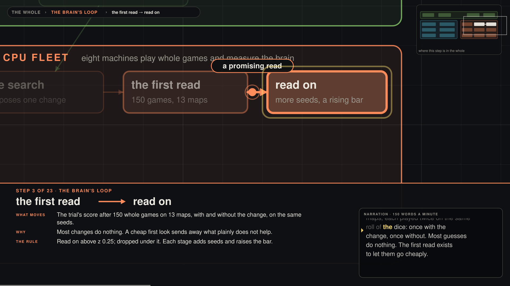
What moves
The trial's score after 150 whole games on 13 maps, with and without the change, on the same seeds.
Why
Most changes do nothing. A cheap first look sends away what plainly does not help.
The rule
Read on above z 0.25; dropped under it. Each stage adds seeds and raises the bar.
Narration
The answer costs games. One hundred and fifty of them, on thirteen maps, each played twice on the same roll of the dice: once with the change, once without. Most guesses do nothing. The first read exists to let them go cheaply.
4. The brain's loop
read on→held-out readsa pass
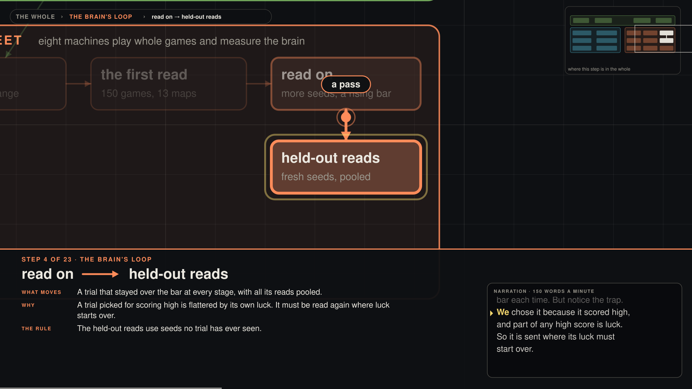
What moves
A trial that stayed over the bar at every stage, with all its reads pooled.
Why
A trial picked for scoring high is flattered by its own luck. It must be read again where luck starts over.
The rule
The held-out reads use seeds no trial has ever seen.
Narration
A guess that looks good is read again, with more games and a higher bar each time. But notice the trap. We chose it because it scored high, and part of any high score is luck. So it is sent where its luck must start over.
5. The brain's loop
held-out reads→the gatesa candidate
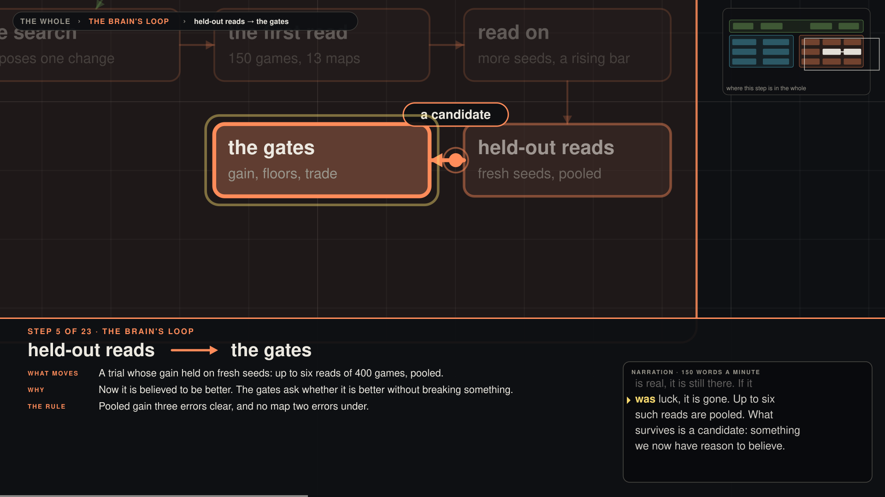
What moves
A trial whose gain held on fresh seeds: up to six reads of 400 games, pooled.
Why
Now it is believed to be better. The gates ask whether it is better without breaking something.
The rule
Pooled gain three errors clear, and no map two errors under.
Narration
Fresh seeds. Games no trial has ever been measured on. If the gain is real, it is still there. If it was luck, it is gone. Up to six such reads are pooled. What survives is a candidate: something we now have reason to believe.
6. The brain's loop
the gates→the linea promotion: one commit
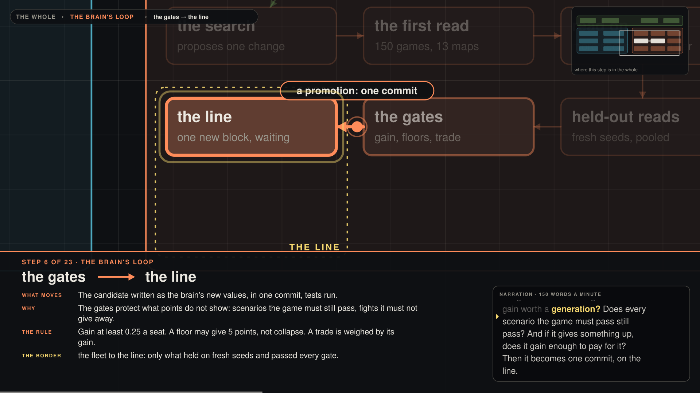
What moves
The candidate written as the brain's new values, in one commit, tests run.
Why
The gates protect what points do not show: scenarios the game must still pass, fights it must not give away.
The rule
Gain at least 0.25 a seat. A floor may give 5 points, not collapse. A trade is weighed by its gain.
The border
the fleet to the line: only what held on fresh seeds and passed every gate.
Narration
Belief is not enough, because points do not show everything. So the gates ask three things. Is the gain worth a generation? Does every scenario the game must pass still pass? And if it gives something up, does it gain enough to pay for it? Then it becomes one commit, on the line.
7. The brain's loop
the line→the proofthe line against main
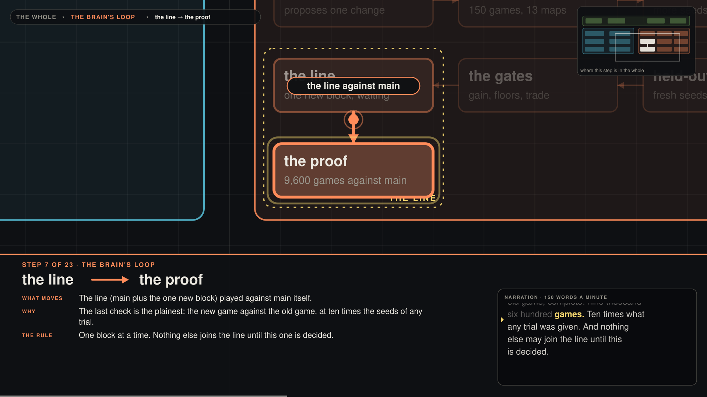
What moves
The line (main plus the one new block) played against main itself.
Why
The last check is the plainest: the new game against the old game, at ten times the seeds of any trial.
The rule
One block at a time. Nothing else joins the line until this one is decided.
Narration
The line is a waiting room for one. The new game, complete, plays the old game, complete: nine thousand six hundred games. Ten times what any trial was given. And nothing else may join the line until this is decided.
8. The brain's loop
the proof→the brain's valuesproved: pushed to main
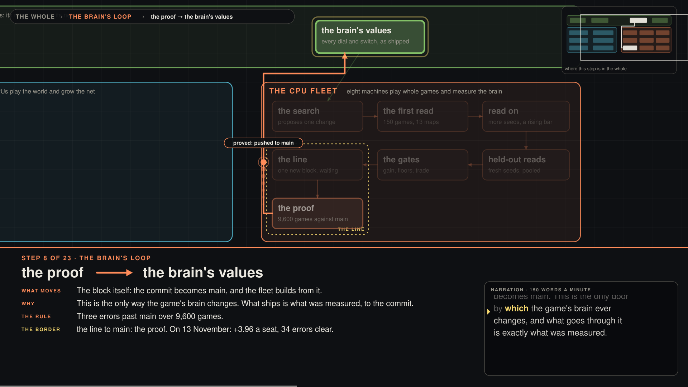
What moves
The block itself: the commit becomes main, and the fleet builds from it.
Why
This is the only way the game's brain changes. What ships is what was measured, to the commit.
The rule
Three errors past main over 9,600 games.
The border
the line to main: the proof. On 13 November: +3.96 a seat, 34 errors clear.
Narration
If it leads by three of its own errors, it crosses. The commit becomes main. This is the only door by which the game's brain ever changes, and what goes through it is exactly what was measured.
9. The brain's loop
the proof→orphanedrefused: off the line
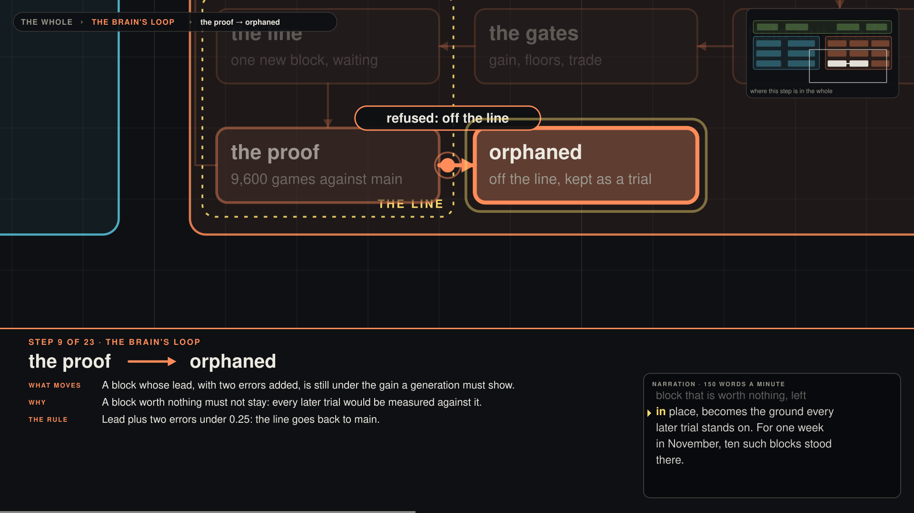
What moves
A block whose lead, with two errors added, is still under the gain a generation must show.
Why
A block worth nothing must not stay: every later trial would be measured against it.
The rule
Lead plus two errors under 0.25: the line goes back to main.
Narration
If it does not lead, it comes off. This matters more than it seems. A block that is worth nothing, left in place, becomes the ground every later trial stands on. For one week in November, ten such blocks stood there.
10. The brain's loop
orphaned→the searchread again later
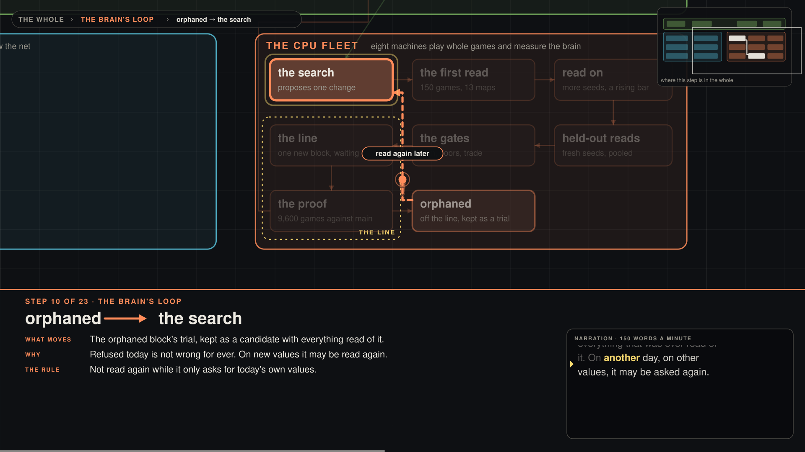
What moves
The orphaned block's trial, kept as a candidate with everything read of it.
Why
Refused today is not wrong for ever. On new values it may be read again.
The rule
Not read again while it only asks for today's own values.
Narration
But refused is not forgotten. The trial goes back to the search, with everything that was ever read of it. On another day, on other values, it may be asked again.
11. The brain's loop
the proof→a flagproved, held by one map
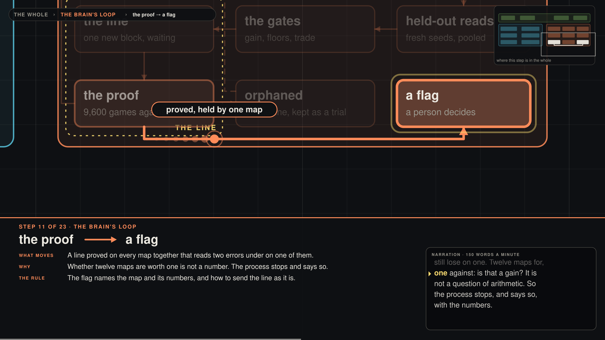
What moves
A line proved on every map together that reads two errors under on one of them.
Why
Whether twelve maps are worth one is not a number. The process stops and says so.
The rule
The flag names the map and its numbers, and how to send the line as it is.
Narration
There is a third ending. A line can win on every map together, and still lose on one. Twelve maps for, one against: is that a gain? It is not a question of arithmetic. So the process stops, and says so, with the numbers.
12. The brain's loop
a flag→the brain's valuesa person sends it
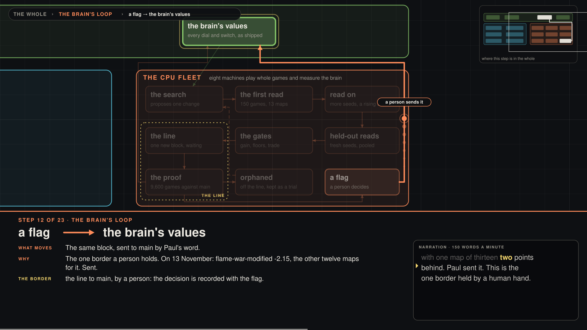
What moves
The same block, sent to main by Paul's word.
Why
The one border a person holds. On 13 November: flame-war-modified -2.15, the other twelve maps for it. Sent.
The border
the line to main, by a person: the decision is recorded with the flag.
Narration
And a person answers. On the thirteenth of November the line stood nearly four points ahead, with one map of thirteen two points behind. Paul sent it. This is the one border held by a human hand.
13. The brain's loop
the brain's values→the yardstickmain, measured
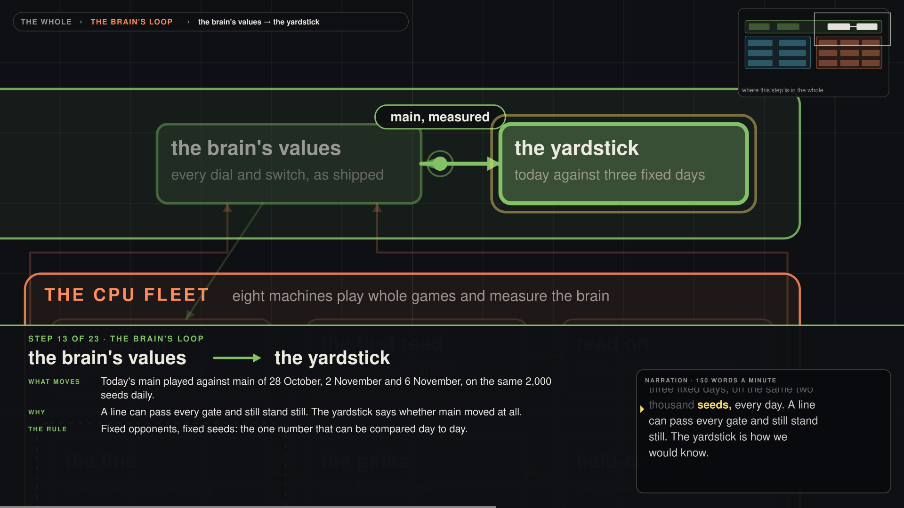
What moves
Today's main played against main of 28 October, 2 November and 6 November, on the same 2,000 seeds daily.
Why
A line can pass every gate and still stand still. The yardstick says whether main moved at all.
The rule
Fixed opponents, fixed seeds: the one number that can be compared day to day.
Narration
Last, a ruler that does not move. Today's game against the game of three fixed days, on the same two thousand seeds, every day. A line can pass every gate and still stand still. The yardstick is how we would know.
14. The net's loop
the world's rules→three islandsthe game's numbers
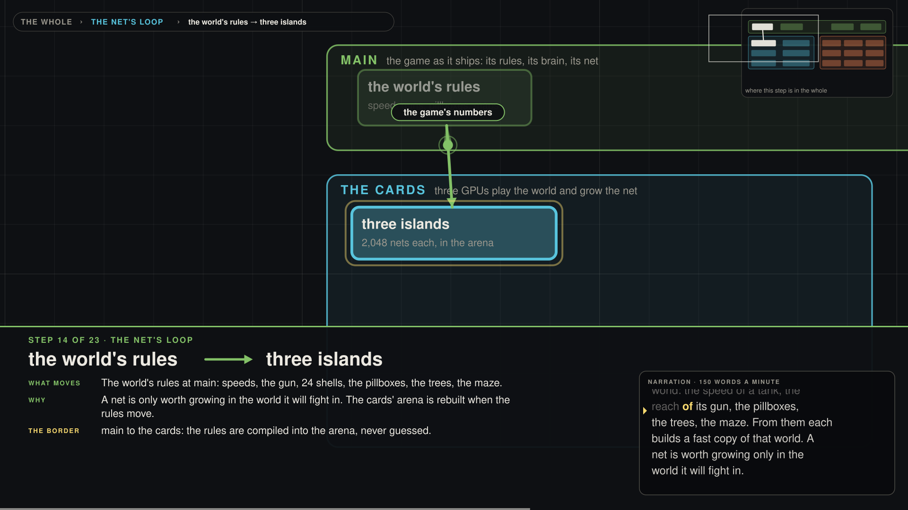
What moves
The world's rules at main: speeds, the gun, 24 shells, the pillboxes, the trees, the maze.
Why
A net is only worth growing in the world it will fight in. The cards' arena is rebuilt when the rules move.
The border
main to the cards: the rules are compiled into the arena, never guessed.
Narration
Now the other loop. Three graphics cards are given the rules of the world: the speed of a tank, the reach of its gun, the pillboxes, the trees, the maze. From them each builds a fast copy of that world. A net is worth growing only in the world it will fight in.
15. The net's loop
three islands→a milestonea champion
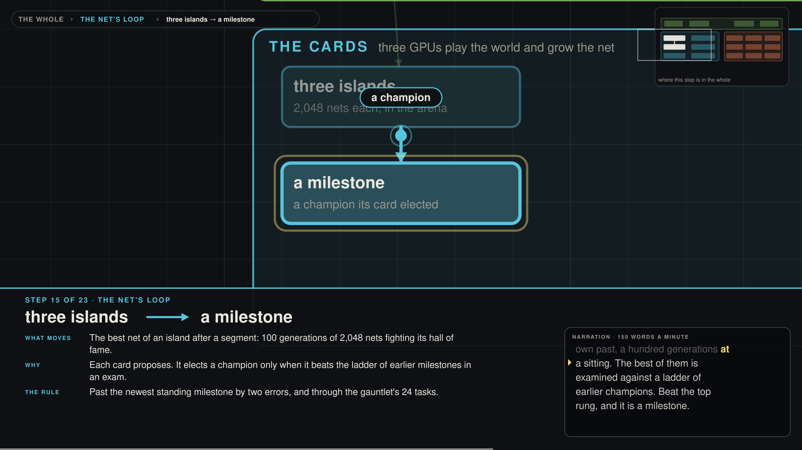
What moves
The best net of an island after a segment: 100 generations of 2,048 nets fighting its hall of fame.
Why
Each card proposes. It elects a champion only when it beats the ladder of earlier milestones in an exam.
The rule
Past the newest standing milestone by two errors, and through the gauntlet's 24 tasks.
Narration
On each card, an island: two thousand and forty-eight small nets, fighting the best of their own past, a hundred generations at a sitting. The best of them is examined against a ladder of earlier champions. Beat the top rung, and it is a milestone.
16. The net's loop
a milestone→the bridge5,766 numbers
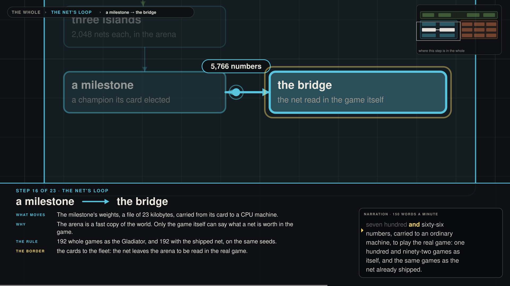
What moves
The milestone's weights, a file of 23 kilobytes, carried from its card to a CPU machine.
Why
The arena is a fast copy of the world. Only the game itself can say what a net is worth in the game.
The rule
192 whole games as the Gladiator, and 192 with the shipped net, on the same seeds.
The border
the cards to the fleet: the net leaves the arena to be read in the real game.
Narration
But the arena is a copy, and a copy can flatter. So the milestone leaves its card. Five thousand seven hundred and sixty-six numbers, carried to an ordinary machine, to play the real game: one hundred and ninety-two games as itself, and the same games as the net already shipped.
17. The net's loop
the bridge→refused by the gameclearly worse
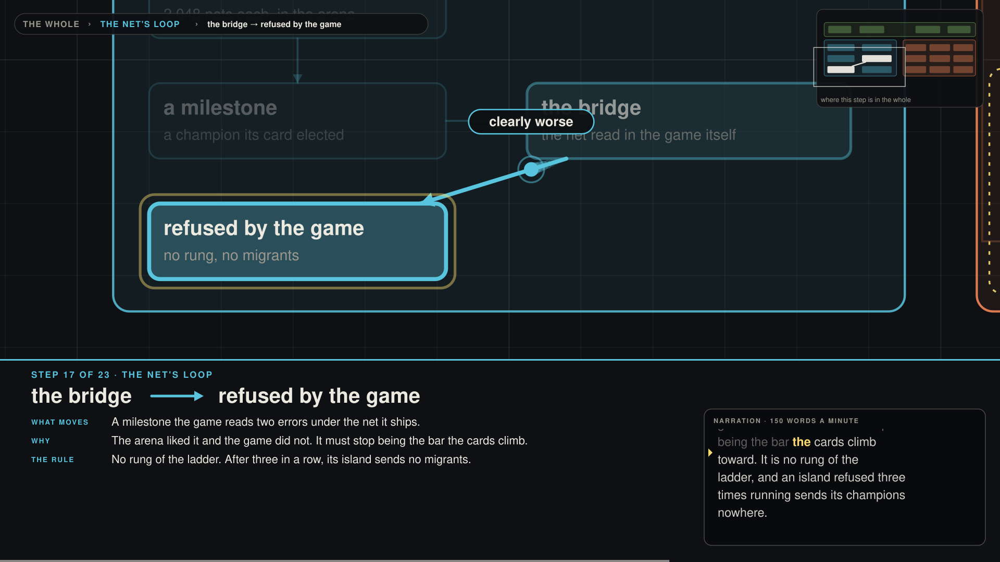
What moves
A milestone the game reads two errors under the net it ships.
Why
The arena liked it and the game did not. It must stop being the bar the cards climb.
The rule
No rung of the ladder. After three in a row, its island sends no migrants.
Narration
Sometimes the game says no, plainly. The arena admired it. The game did not. Then it must stop being the bar the cards climb toward. It is no rung of the ladder, and an island refused three times running sends its champions nowhere.
18. The net's loop
the bridge→the second readpast two errors
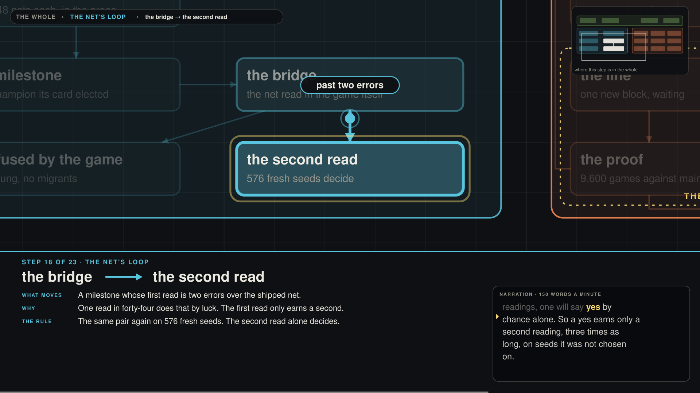
What moves
A milestone whose first read is two errors over the shipped net.
Why
One read in forty-four does that by luck. The first read only earns a second.
The rule
The same pair again on 576 fresh seeds. The second read alone decides.
Narration
Sometimes the game says yes. And here is the temptation: to believe it. But in forty-four such readings, one will say yes by chance alone. So a yes earns only a second reading, three times as long, on seeds it was not chosen on.
19. The net's loop
the second read→the Gladiatorcredited: shipped
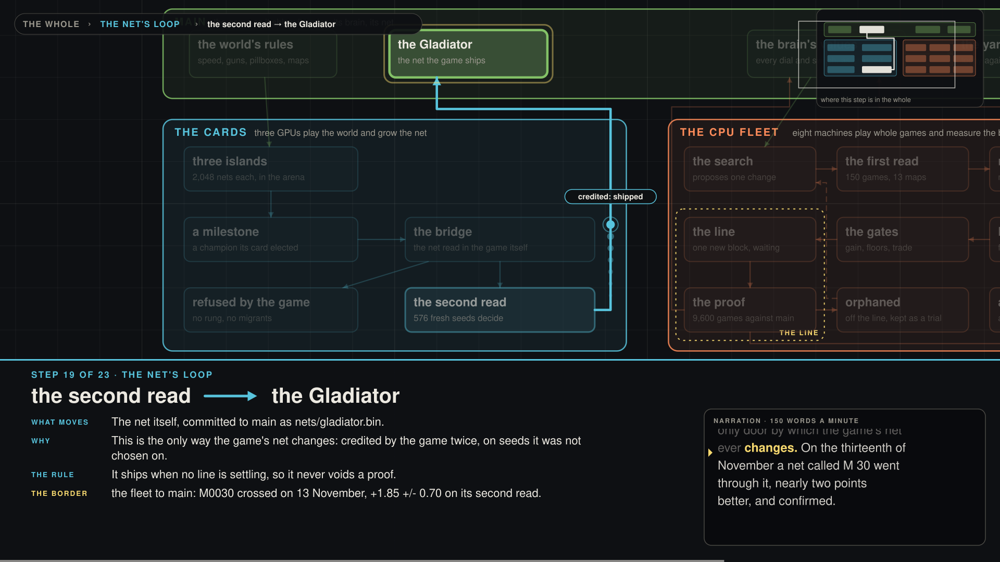
What moves
The net itself, committed to main as nets/gladiator.bin.
Why
This is the only way the game's net changes: credited by the game twice, on seeds it was not chosen on.
The rule
It ships when no line is settling, so it never voids a proof.
The border
the fleet to main: M0030 crossed on 13 November, +1.85 +/- 0.70 on its second read.
Narration
If the second reading agrees, the net crosses into main. It is the only door by which the game's net ever changes. On the thirteenth of November a net called M 30 went through it, nearly two points better, and confirmed.
20. The net's loop
the Gladiator→migrantsthe shipped net
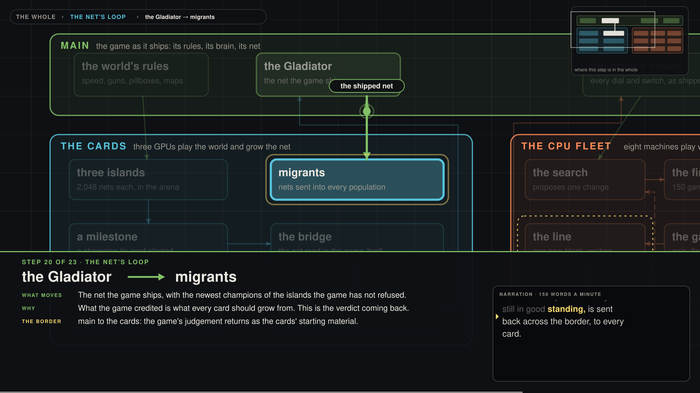
What moves
The net the game ships, with the newest champions of the islands the game has not refused.
Why
What the game credited is what every card should grow from. This is the verdict coming back.
The border
main to the cards: the game's judgement returns as the cards' starting material.
Narration
And now the verdict comes home. The net the game credited, together with the champions of every island still in good standing, is sent back across the border, to every card.
21. The net's loop
migrants→three islandsparents, if they rank
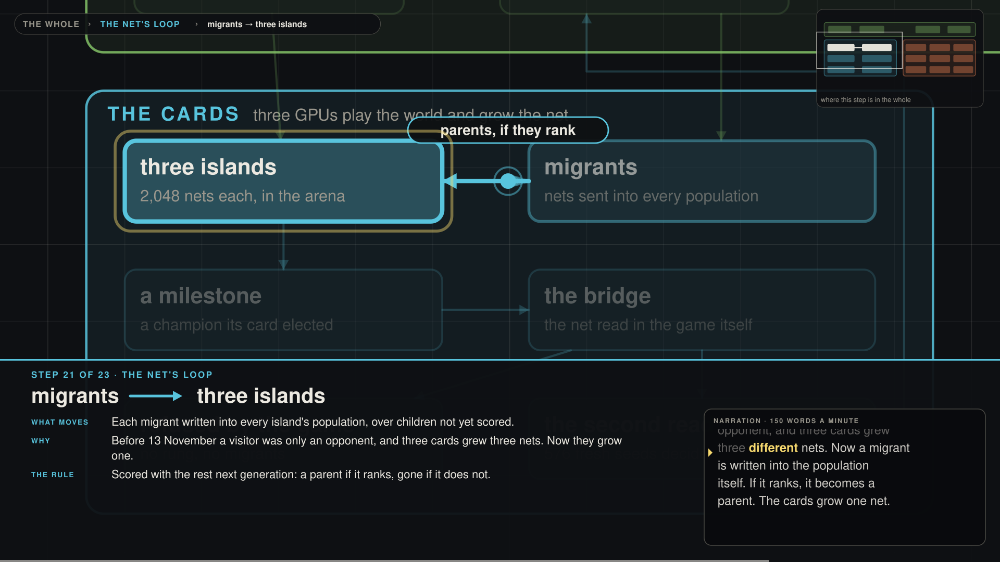
What moves
Each migrant written into every island's population, over children not yet scored.
Why
Before 13 November a visitor was only an opponent, and three cards grew three nets. Now they grow one.
The rule
Scored with the rest next generation: a parent if it ranks, gone if it does not.
Narration
Not as a visitor. Until this day, a net from another card was only an opponent, and three cards grew three different nets. Now a migrant is written into the population itself. If it ranks, it becomes a parent. The cards grow one net.
22. The net's loop
refused by the game→three islandssilence
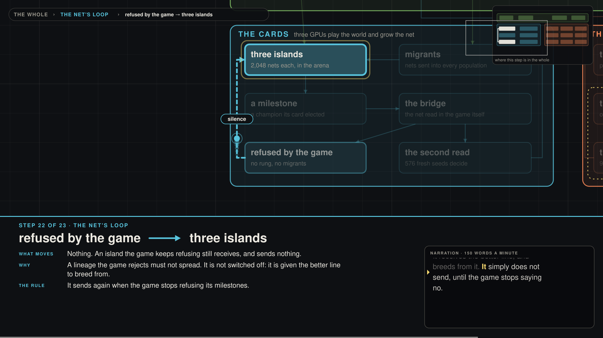
What moves
Nothing. An island the game keeps refusing still receives, and sends nothing.
Why
A lineage the game rejects must not spread. It is not switched off: it is given the better line to breed from.
The rule
It sends again when the game stops refusing its milestones.
Narration
And the island the game keeps refusing? It is not switched off. It receives the better line, and breeds from it. It simply does not send, until the game stops saying no.
23. Where the loops meet
the Gladiator→the first readan opponent in every game
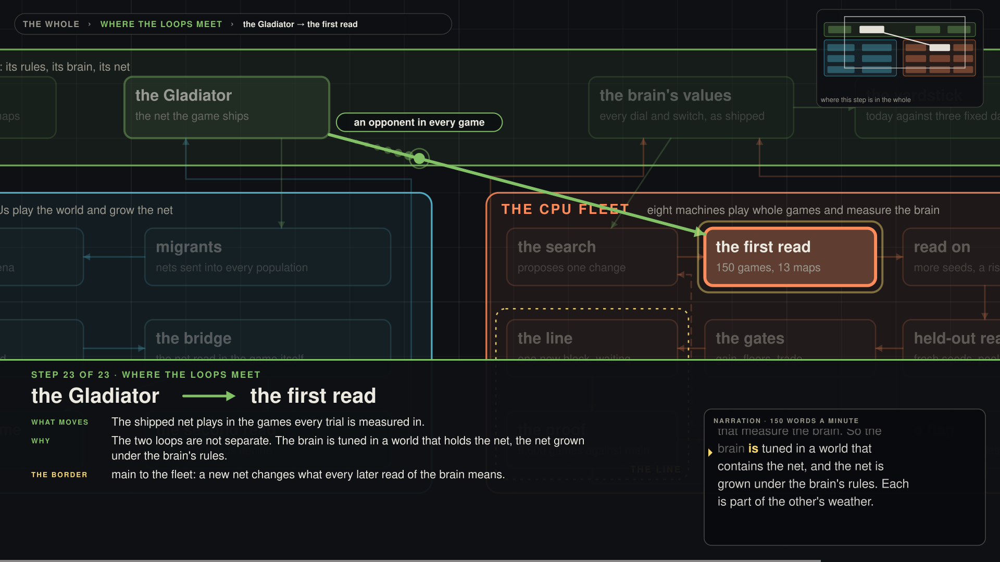
What moves
The shipped net plays in the games every trial is measured in.
Why
The two loops are not separate. The brain is tuned in a world that holds the net, the net grown under the brain's rules.
The border
main to the fleet: a new net changes what every later read of the brain means.
Narration
One arrow joins the two loops. The shipped net plays in the very games that measure the brain. So the brain is tuned in a world that contains the net, and the net is grown under the brain's rules. Each is part of the other's weather.
How the film is made
The film is one file of words and positions (storyboard.json) drawn by two scripts: tools/report/film.py, what any such film shares, and tools/report/process_film.py, how a block diagram is walked. Another process is another storyboard.
The words first
Each scene is exactly as long as its narration at 150 words a minute, with a breath before and after. A mark in the narration is a cue, and the picture's moves are written against cues, so the picture can never run ahead of what is said.
One stage
The diagram is drawn once, every block in its place for the whole film. Scenes move a camera over it and change what is lit. The viewer learns the map once and is never shown a second one.
A function of time
Every frame is computed from its time alone; nothing accumulates. A property is a tween between two times on an easing curve. So any frame renders by itself, a still for this page is the same call as a frame of the film, and the frames render a core each.
Gather, go, land
A move has three parts. The source dips as the token sets out, the token eases away and eases in with a trail behind it, the destination swells as it arrives. One thing moves at a time; a row of words rises into place only while nothing else is moving.
The border
Where an arrow leaves one territory a ring opens on the border, and the token takes the colour of the territory it enters: what crosses is no longer the first territory's.
The cold open
Before the title, a true thing that should not be possible: ten changes that each tested as a gain and together measured as nothing; then why (every trial the search made, lying on the curve of pure chance); then the question the film answers.
Outside in
After the title it opens far off on the whole, names three territories, then the four borders and their price, then goes inside one loop at a time. Each step carries the path down to it in the top left and a small map of the whole in the top right, so no step is seen out of its place.
Pace
A step runs 12 to 24 seconds: the camera arrives in a second and a half, the arrow draws, the token travels for 3.4 seconds and sets out again every 5.6 while the step is told; what moves appears at 2.8 seconds, why at 5, the rule at 7, the border at 8.